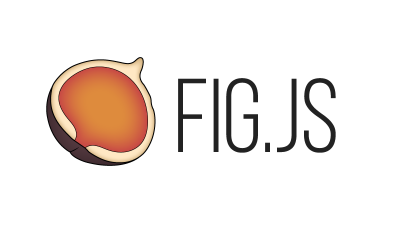
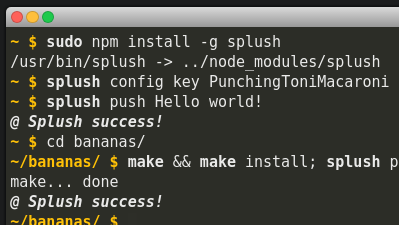
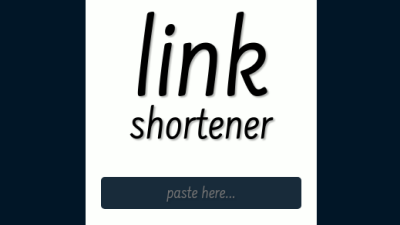
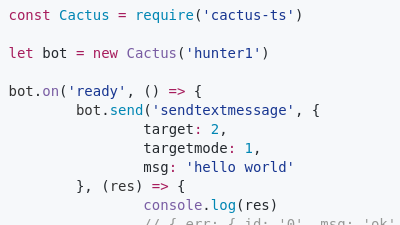
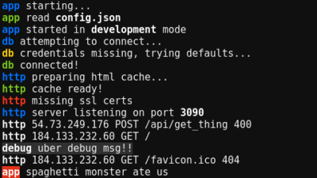

nikersify
fig.js

Experimental front-end UI framework.
splush!

Send push notifications straight from the console.
node.js
express
push api
riot.js
leveldb
pug.js
cli
link

Simple and "pretty" link shortener.
node.js
express
vue.js
rethinkdb
cactus

JavaScript library for making cool TeamSpeak 3 bots.
node.js
log

Tiny logging utility used in these other things sometimes.
node.js
i can make a thing for you
drop me a message
nikersify
made this :)